|
2003年7月10日
韓國測試伺服器更新內容
來源：Lineage
Playforum (2)
(3)
(4)
英文翻譯：Lineage
Compendium
1.
沉默洞穴的出口由龍之谷改為死屍地的北面。
2. 城堡區域會增加HP回覆量。另外有玩家從高崙身上打到影之髮帶(-1防，安定值4，增加MP回覆量)，11精神的黑暗精靈用藍水的話每下回5MP，而用藍水及影之髮帶的話則每下回7MP。
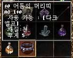
3. 有玩家從沉默洞穴的史巴托打到影之長袍(-5防，安值值6，增加HP回覆量)，體質8的黑暗精靈原本每下回1HP，在穿著後每下可回6HP。
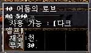
4. 有玩家測試了+9大馬士爪的攻擊力。對48級-46防的玩家攻擊時，不使用附加魔法10下可扣250HP，假如使用了壞甲術及影之牙魔法後，則扣210-320HP。
另外，提煉黑曜石魔法由10MP改為5MP。
最後，在測試中發現最後一擊魔法的傷害力是所消耗的MP減3，假如你有200MP，你的最後一擊會損目標197HP。我們覺得3HP應該是在計算傷害值後才加回上去的，因此最後一擊是永遠不能殺死玩家，玩家最少亦會剩3血。
黑暗精靈30級任務流程
來源：Lineage
Playforum
英文翻譯：Lineage
Compendium
*你必須完成15級任務方可開始30級任務
1. 沉默洞穴的NPC Rond要求你給他暗殺名單，名單內有反王肯恩的部下名稱。
2.
到妖魔森林找被降職的妖魔守衛可以得到暗殺名單。
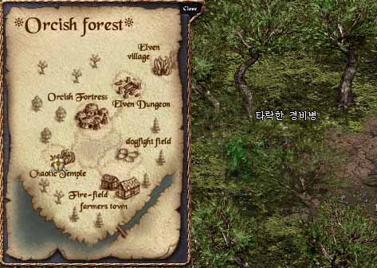
3. NPC Rond會給你一個袋子，內裡有7封信，每封信都有提及你需要殺死哪一個NPC，肯特、古魯丁、奇岩、海音、風木、燃柳村及亞丁城都有NPC要殺死。
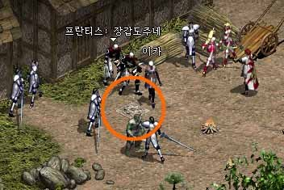
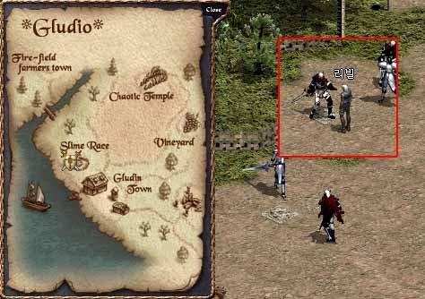
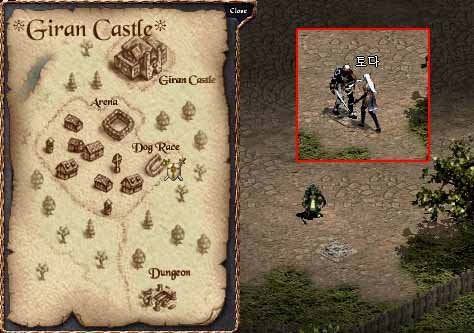
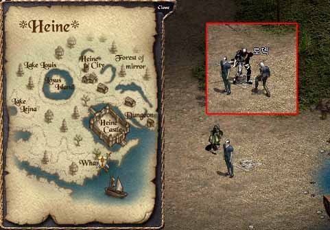
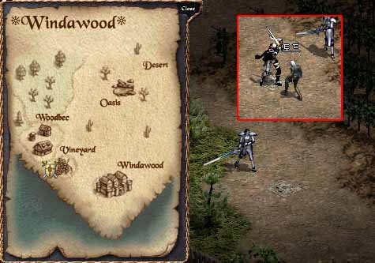
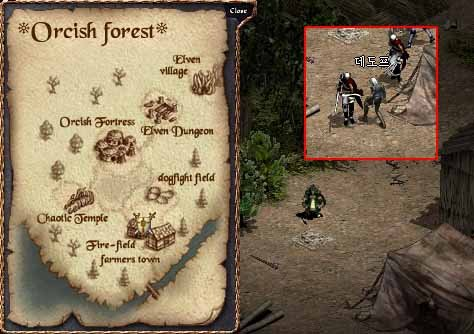
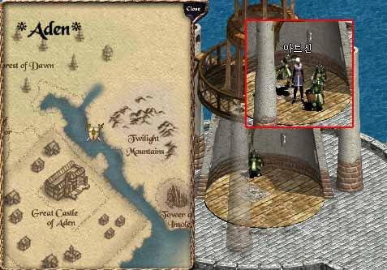
4. 你需要到各城鎮的特別地點(有特別標記的那一格)上使用那些信去令NPC現身，在第7次暗殺完成後，你會得到死亡之證。將死亡之證帶回給NPC
Rond。
5. NPC Rond會給你一個袋子，內有影之手套(-1防，+1體質）及精靈水晶：移動加速。
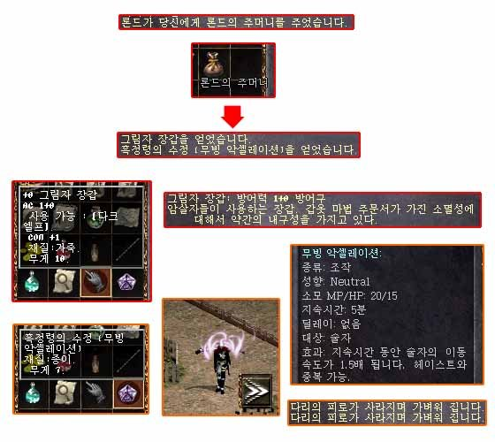
黑暗精靈45級任務流程
來源：Lineage
Playforum
英文翻譯：Lineage
Compendium
*你必須完成30級任務方可開始45級任務
1. 沉默洞穴的長老Bludika要求死亡之誓約，他們指示你去找黑暗精靈的鐵匠Kuru。
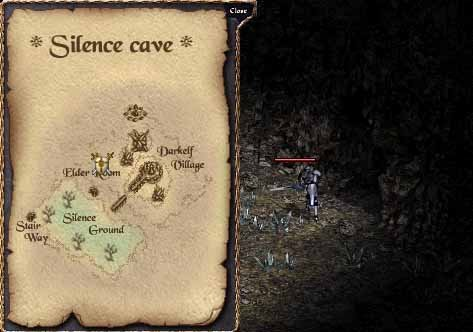
2. Kuru提及傳說武器是由殺手的腐蝕之劍、磨菇之毒及黑暗水晶石製成。
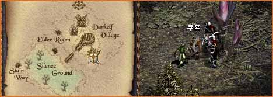
3. 在妖精洞穴1/F外有一名NPC：殺手主人的助手，他只會與其他殺手對話。因此你必須使用45級的殺手變身。他會提及殺手主人在洞穴的深處，想找他的話要先帶給證明。
4. 歐瑞的NPC Rojay可以提供證明，但你需要給他強盜雪怪的頭顱，在殺死強盜雪怪後將人頭帶給Rojay。
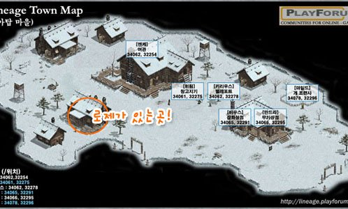
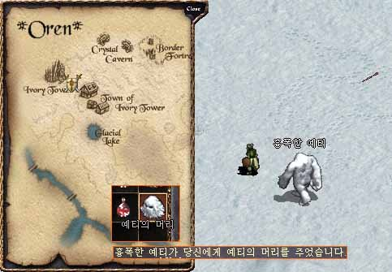
5. Rojay會給你證明，現在你要到妖精洞穴3/F找尋殺手主人，在那裡會有特別的點可以傳送進殺手主人的地方。
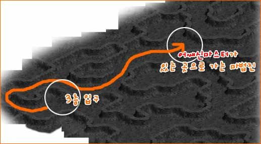
6.
你必須單挑殺手主人去取得殺手主人的盒子，內有殺手的腐蝕之劍及死亡主人的卷軸。
7. 將卷軸交給沉默洞穴的長老Bludika便可以取得精靈水晶：直覺閃躲及影之長靴(-2防，HP+50，增加HP回覆量)。
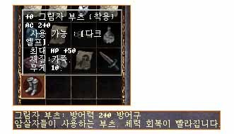 |